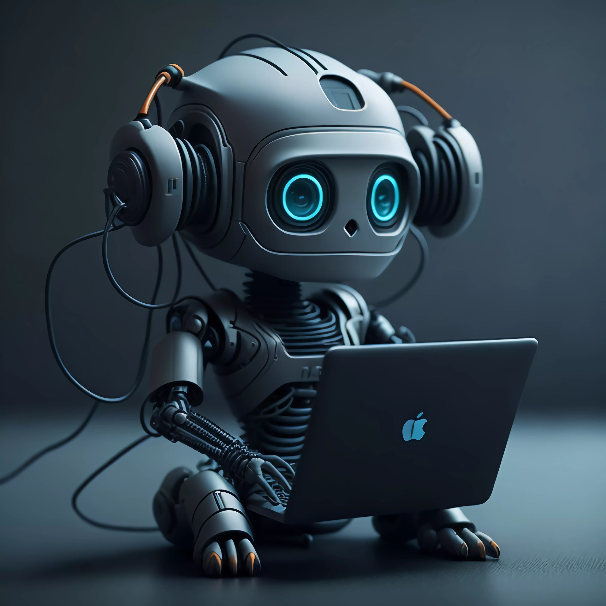

While AI presents exciting opportunities, it also poses risks and challenges to traditional employment models. It is important to acknowledge and understand these risks to ensure a balanced perspective on the AI-employment relationship. Let's explore some of the risks associated with the increasing integration of AI in the workforce.
1. Job Displacement: One of the most significant concerns is the potential displacement of human workers as AI automation replaces certain job roles. Tasks that are repetitive, rule-based, or easily automated are particularly susceptible to being taken over by AI systems, leading to job losses and disruptions in various industries (Kelnar, 2019).
2. Skill Mismatch: The rapid advancement of AI technologies requires workers to upskill or reskill to remain relevant in the job market. However, not everyone may have access to the necessary training or resources to adapt to the changing requirements
3. Human-AI Collaboration Challenges: Integrating AI systems into the workforce requires effective collaboration between humans and machines. However, the transition to a harmonious human-AI working environment may face challenges related to communication, trust, and decision-making. Balancing the strengths of AI with human intuition and creativity can be a complex task (Neufeind et al., 2018, p. 142).
4. Ethical Concerns and Bias: AI algorithms are trained on vast amounts of data, which can introduce biases and reflect existing societal prejudices. If not carefully managed, AI systems can perpetuate discrimination and reinforce biased practices. Ensuring ethical AI deployment and mitigating bias are critical to promoting fairness and inclusivity in the workplace (UNESCO, 2023).
These risks highlight the importance of proactive measures, such as policy frameworks, education and training programs, and ethical guidelines, to address the challenges associated with AI's impact on employment and work towards a balanced and inclusive AI-powered future.